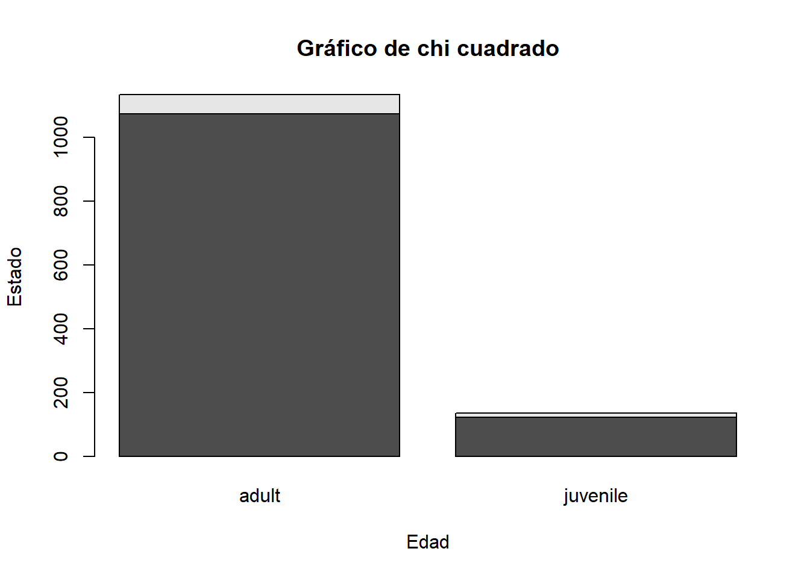
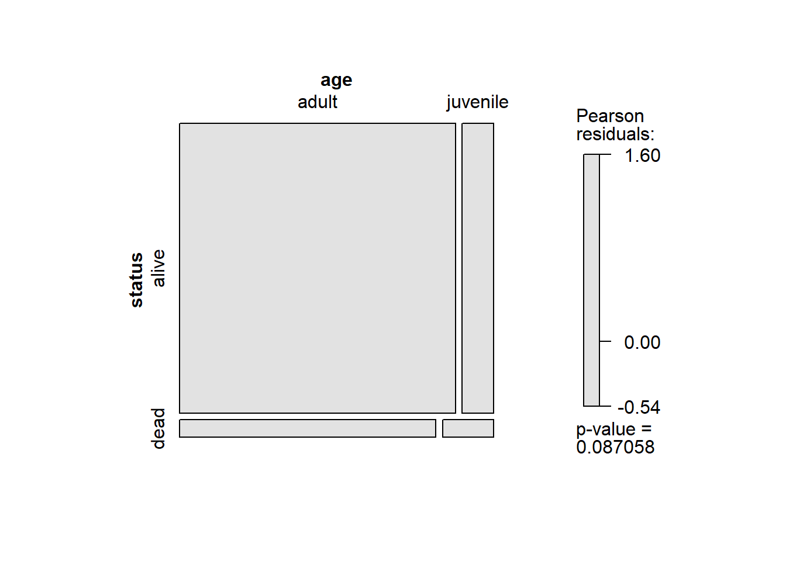
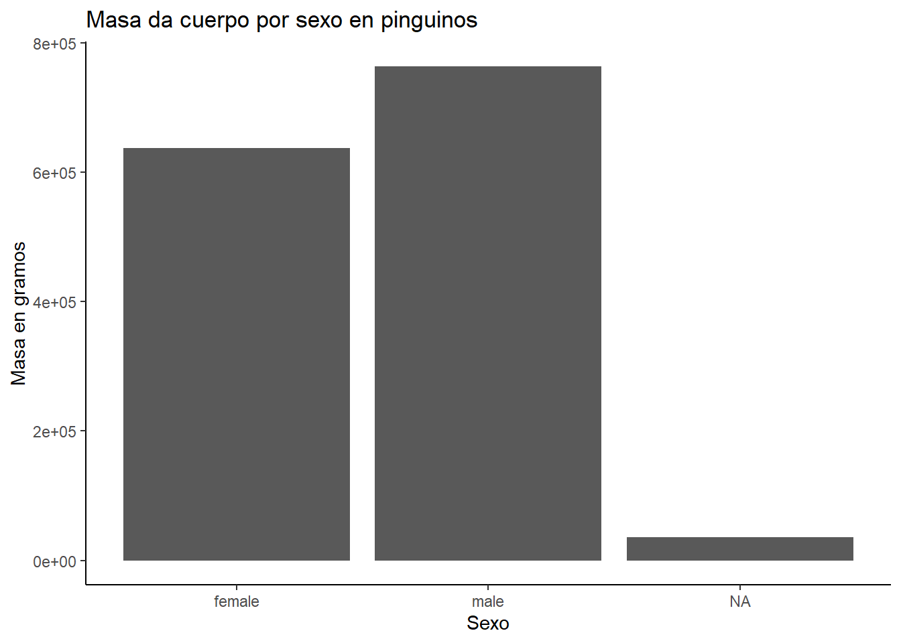
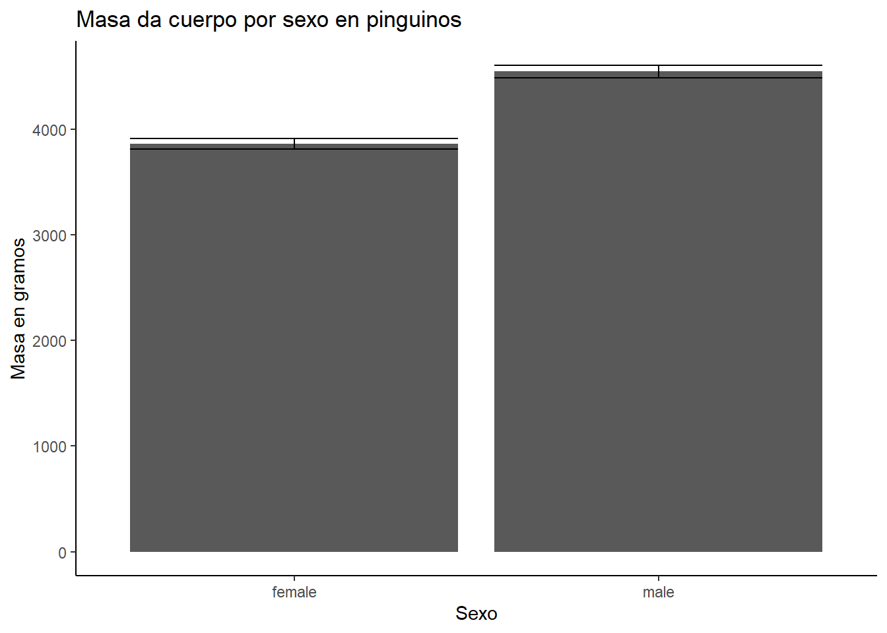
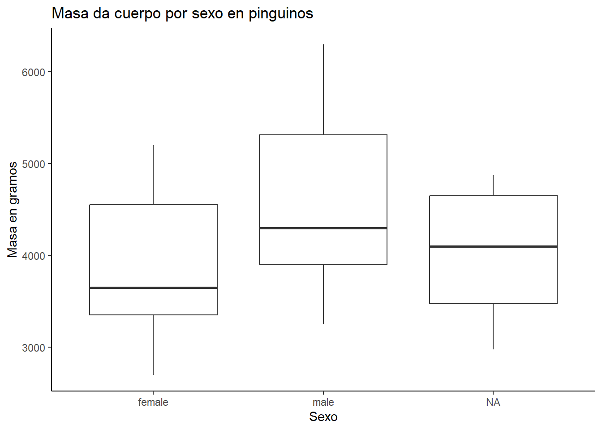
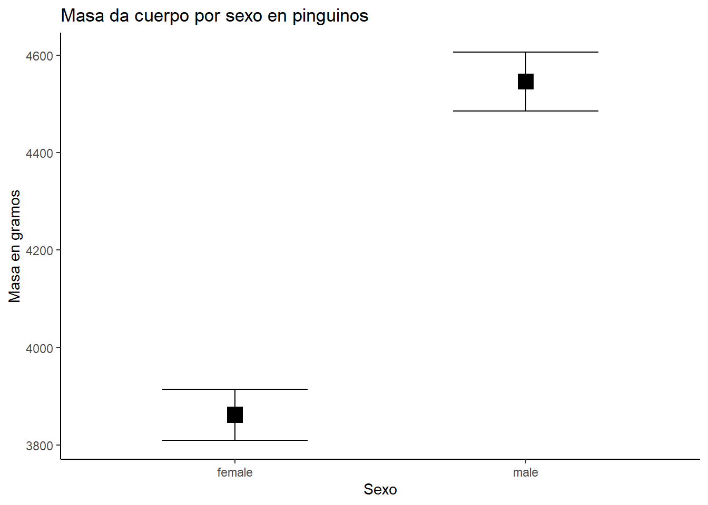
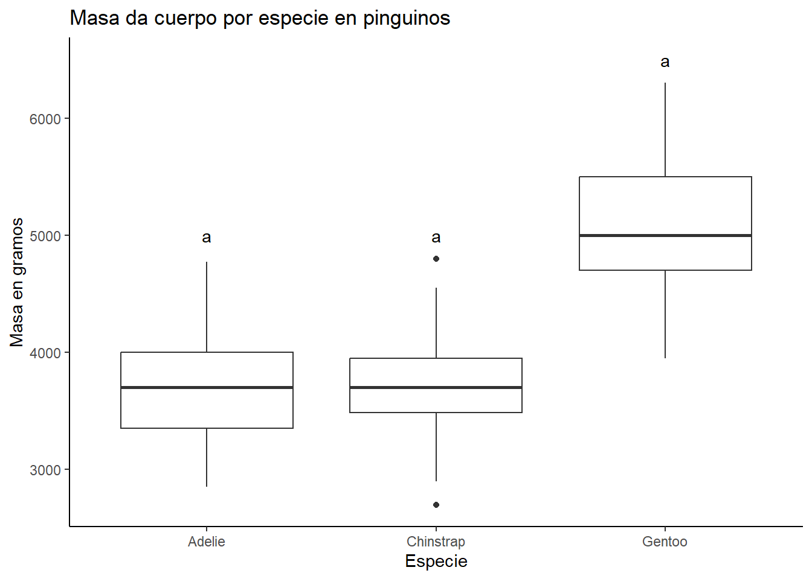
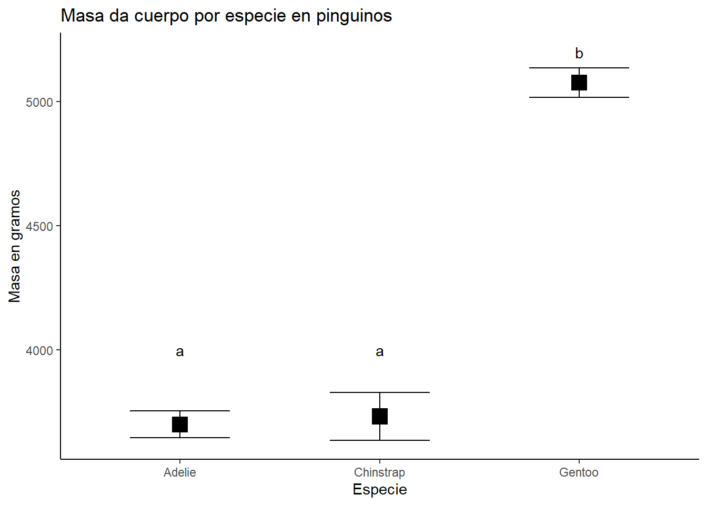

Delomys <- read.csv("data/delomys.csv")Clase 4: Pruebas no-parametricas
Las pruebas no paramétricas son un conjunto de técnicas de prueba estadística que se utilizan para evaluar hipótesis sobre una población cuando no se tienen suficientes datos para suponer una distribución particular de los datos. A diferencia de las pruebas paramétricas, que asumen una distribución particular de los datos (como la distribución normal), las pruebas no paramétricas no requieren ninguna suposición sobre la distribución de los datos.
Algunas pruebas no paramétricas comunes incluyen:
Prueba de Wilcoxon: se utiliza para comparar dos grupos de datos ordenados y se utiliza a menudo cuando los datos no siguen una distribución normal.
Prueba de Kruskal-Wallis: se utiliza para comparar más de dos grupos de datos ordenados y se utiliza a menudo cuando los datos no siguen una distribución normal.
Prueba de Mann-Whitney: se utiliza para comparar dos grupos de datos no ordenados y se utiliza a menudo cuando los datos no siguen una distribución normal.
Prueba de chi-cuadrado: se utiliza para comparar una distribución observada de datos con una distribución esperada y se utiliza a menudo para comparar datos categóricos.
Es importante tener en cuenta que las pruebas no paramétricas suelen ser menos robustas (es decir, tienen menor capacidad para detectar diferencias significativas) que las pruebas paramétricas, por lo que es importante elegir la prueba adecuada para su conjunto de datos y objetivo de investigación.
Pruebas no parametricas
La prueba de Wilcoxon es una prueba no paramétrica utilizada para comparar dos grupos de datos ordenados y se utiliza a menudo cuando los datos no siguen una distribución normal. Esta prueba es similar a la prueba t de Student, que es una prueba paramétrica utilizada para comparar dos grupos de datos, pero la prueba de Wilcoxon no requiere que los datos sigan una distribución normal.
Ejemplo de prueba Wilcoxon
Primero necesitamos cargar la base de datos, en este caso utlizaremos delomys.csv
Ahora podemos realizar la prueba con el comando wilcox.test()
wilcox.test(body_mass ~ sex, data= Delomys, alternative = "two.sided")
Wilcoxon rank sum test with continuity correction
data: body_mass by sex
W = 276473, p-value = 8.748e-05
alternative hypothesis: true location shift is not equal to 0La prueba de Mann-Whitney es una prueba no paramétrica utilizada para comparar dos grupos de datos no ordenados y se utiliza a menudo cuando los datos no siguen una distribución normal. Esta prueba es similar a la prueba t de Student, que es una prueba paramétrica utilizada para comparar dos grupos de datos, pero la prueba de Mann-Whitney no requiere que los datos sigan una distribución normal.
Es importante tener en cuenta que la prueba de Mann-Whitney solo puede utilizarse para comparar dos grupos de datos y no es adecuada para comparar más de dos grupos. En su lugar, se puede utilizar la prueba de Kruskal-Wallis para comparar más de dos grupos de datos ordenados o la prueba de chi-cuadrado para comparar más de dos grupos de datos categóricos.
Ejemplo de la prueba Mann-Whitney
Para realizar la prueba de Mann-Whitney en R, puedes utilizar la función wilcox.test() con el argumento alternative = “two.sided”. La sintaxis para la función wilcox.test() es la siguiente:
wilcox.test(body_mass ~ sex, data= Delomys, alternative = "two.sided")
Wilcoxon rank sum test with continuity correction
data: body_mass by sex
W = 276473, p-value = 8.748e-05
alternative hypothesis: true location shift is not equal to 0La prueba de Wilcoxon y la prueba de Mann-Whitney son ambas pruebas no paramétricas utilizadas para comparar dos grupos de datos, pero hay algunas diferencias clave entre ellas. En la prueba de Wilcoxon se utiliza para comparar dos grupos de datos ordenados mientras que la prueba de Mann-Whitney se utiliza para comparar dos grupos de datos no ordenados.
La prueba de Kruskal-Wallis es una prueba no paramétrica utilizada para comparar más de dos grupos de datos ordenados y se utiliza a menudo cuando los datos no siguen una distribución normal. Esta prueba es similar a la prueba ANOVA, que es una prueba paramétrica utilizada para comparar más de dos grupos de datos, pero la prueba de Kruskal-Wallis no requiere que los datos sigan una distribución normal.
Ejemplo de prueba Kruskal-wallis
Para este ejemplo utilizaremos la base de datos penguins del paquete palmerpenguins
library(palmerpenguins)
data(peguins)Warning in data(peguins): data set 'peguins' not foundUtilizares la prueba de Kruskal-wallis para comparar la masa del cuerpo de los pinguinos por especie.
kruskal.test(body_mass_g ~ species, data= penguins)
Kruskal-Wallis rank sum test
data: body_mass_g by species
Kruskal-Wallis chi-squared = 217.6, df = 2, p-value < 2.2e-16Como se puedo observar el resultado indica que hay diferencias significativas de la masa del cuerpo por especie de pinguino, ahora necesitaremos realizar una prueba de contraste. En este caso utilizaremos la prueba Dunn.
La prueba de Dunn es una prueba no paramétrica utilizada para comparar más de dos grupos de datos ordenados. Esta prueba se utiliza a menudo después de realizar una prueba de Kruskal-Wallis, que es otra prueba no paramétrica utilizada para comparar más de dos grupos de datos ordenados, cuando se ha encontrado una diferencia significativa entre al menos dos de los grupos.
library(FSA)Warning: package 'FSA' was built under R version 4.3.3## FSA v0.9.5. See citation('FSA') if used in publication.
## Run fishR() for related website and fishR('IFAR') for related book.dunnTest(body_mass_g ~ species, data= penguins)Warning: Some rows deleted from 'x' and 'g' because missing data.Dunn (1964) Kruskal-Wallis multiple comparison p-values adjusted with the Holm method. Comparison Z P.unadj P.adj
1 Adelie - Chinstrap -0.3973552 6.911056e-01 6.911056e-01
2 Adelie - Gentoo -13.8280088 1.727360e-43 5.182080e-43
3 Chinstrap - Gentoo -10.7303390 7.332668e-27 1.466534e-26La prueba de chi cuadrado es una prueba estadística utilizada para comparar dos o más grupos de datos categóricos. Esta prueba se basa en la hipótesis nula de que no hay diferencias significativas entre los grupos y se utiliza para determinar si hay una asociación entre las variables categóricas.
Para realizar una prueba de chi cuadrado, se crea una tabla de contingencia que muestra la frecuencia de cada combinación de categorías entre las dos variables.
Ejemplo Chi Cuadrado
Para este ejemplo utilizares la base de datos Delomys, analisaremos si existe una asiciacion entre la variable status y age.
- Primero creamos nuestra tabla de contingencia
TablaCon <- table(Delomys$status, Delomys$age)
TablaCon
adult juvenile
alive 1075 123
dead 60 12- Ahora podemos realizar la prueba de Chi Cuadrado
chisq.test(TablaCon)
Pearson's Chi-squared test with Yates' continuity correction
data: TablaCon
X-squared = 2.2931, df = 1, p-value = 0.13- Visualizaremos nuestra relacion utilizando grafico de barra
barplot(TablaCon,
main = "Gráfico de chi cuadrado",
xlab = "Edad",
ylab = "Estado")
- Una visualizacion mas adecuada
library(vcd)Loading required package: gridmosaic(~ status + age, data = Delomys, shade = T)
Para realizar nuetro grafico podemos usar la siguiente sintaxis
Primer ejemplo Sexo por Masa
library(ggplot2)
ggplot(data= penguins, aes(x= sex, y = body_mass_g)) +
geom_bar(stat = "identity") +
labs(title = "Masa da cuerpo por sexo en pinguinos",
y= "Masa en gramos",
x= "Sexo")+
theme_classic()Warning: Removed 2 rows containing missing values (`position_stack()`).
Que se observa con este grafico?
Sera apropiado para visualizar una comparacion?
Segundo ejemplo Sexo por Masa
Primero necesitaremos organizar nuestros datos para obtener la media y error estandard
library(FSA)
Sex_body <- Summarize(body_mass_g ~ sex, data= penguins)
Sex_body$ES <- Sex_body$sd / sqrt(Sex_body$n)Una vez que tenemos nuestra tabla podemos graficar
ggplot(data= Sex_body, aes(x= sex, y = mean)) +
geom_bar(stat = "identity") +
geom_errorbar(aes(ymin= mean - ES,
ymax= mean + ES)) +
labs(title = "Masa da cuerpo por sexo en pinguinos",
y= "Masa en gramos",
x= "Sexo")+
theme_classic()
Que se observa con este grafico?
Sera apropiado para visualizar una comparacion?
Para realizar un grafico de caja normal usamos la siguiente sintaxis
Primer ejemplo Sexo por Masa
ggplot(data= penguins, aes(x= sex, y = body_mass_g)) +
geom_boxplot() +
labs(title = "Masa da cuerpo por sexo en pinguinos",
y= "Masa en gramos",
x= "Sexo")+
theme_classic()Warning: Removed 2 rows containing non-finite values (`stat_boxplot()`).
Que se observa con este grafico?
Sera apropiado para visualizar una comparacion?
Segundo ejemplo Sexo por Masa
Primero necesitaremos organizar nuestros datos para obtener la media y error estandard
library(FSA)
Sex_body <- Summarize(body_mass_g ~ sex, data= penguins)
Sex_body$ES <- Sex_body$sd / sqrt(Sex_body$n)Una vez que tenemos nuestra tabla podemos graficar
ggplot(data= Sex_body, aes(x= sex, y = mean)) +
geom_point(size= 5, shape = 15) +
geom_errorbar(aes(ymin= mean - ES,
ymax= mean + ES),
width = 0.5) +
labs(title = "Masa da cuerpo por sexo en pinguinos",
y= "Masa en gramos",
x= "Sexo")+
theme_classic()
Que se observa con este grafico?
Sera apropiado para visualizar una comparacion?
Tercer ejemplo Especie por Masa
ggplot(data= penguins, aes(x= species, y = body_mass_g)) +
geom_boxplot() +
labs(title = "Masa da cuerpo por especie en pinguinos",
y= "Masa en gramos",
x= "Especie")+
annotate("text", x = "Adelie", y = 5000, label = "a")+
annotate("text", x = "Chinstrap", y = 5000, label = "a")+
annotate("text", x = "Gentoo", y = 6500, label = "a")+
theme_classic()Warning: Removed 2 rows containing non-finite values (`stat_boxplot()`).
Cuarto ejemplo Especie por Masa
Primero necesitaremos organizar nuestros datos para obtener la media y error estandard
Especie_body <- Summarize(body_mass_g ~ species, data= penguins)
Especie_body$ES <- Sex_body$sd / sqrt(Especie_body$n)Warning in Sex_body$sd/sqrt(Especie_body$n): longer object length is not a
multiple of shorter object lengthUna vez que tenemos nuestra tabla podemos graficar
ggplot(data= Especie_body, aes(x= species, y = mean)) +
geom_point(size= 5, shape = 15) +
geom_errorbar(aes(ymin= mean - ES,
ymax= mean + ES),
width = 0.5) +
labs(title = "Masa da cuerpo por especie en pinguinos",
y= "Masa en gramos",
x= "Especie")+
annotate("text", x = "Adelie", y = 4000, label = "a")+
annotate("text", x = "Chinstrap", y = 4000, label = "a")+
annotate("text", x = "Gentoo", y = 5200, label = "b")+
theme_classic()